The Auger
You hear it before you see it. A low rumble under your boots, then the ground ahead lifts into a hill that was not there a moment ago. The hill splits, and a machine about a kilometre long comes out of it like a whale leaving the sea.
The crews call it the Auger. It is sealed. No doors, no ladders, no railings, no way in. Nobody built it for people. It lives under the disc, it follows old routes down there, and it comes up for one reason: something on the surface is worth eating.
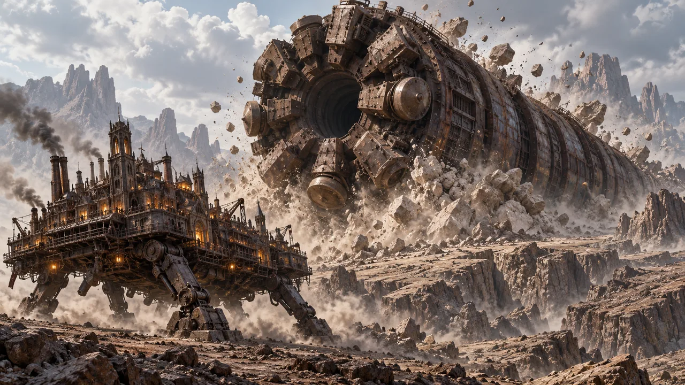
These are the numbers we are building to today. They will be tuned by play.
The Head
The face of the Auger is a wall of cutting domes in warm brass and bronze, the one place in the world where we let brass take over from dark iron. Behind the domes is the throat, and the throat is fire. It is meant to be the last place on the disc you want to be standing near.

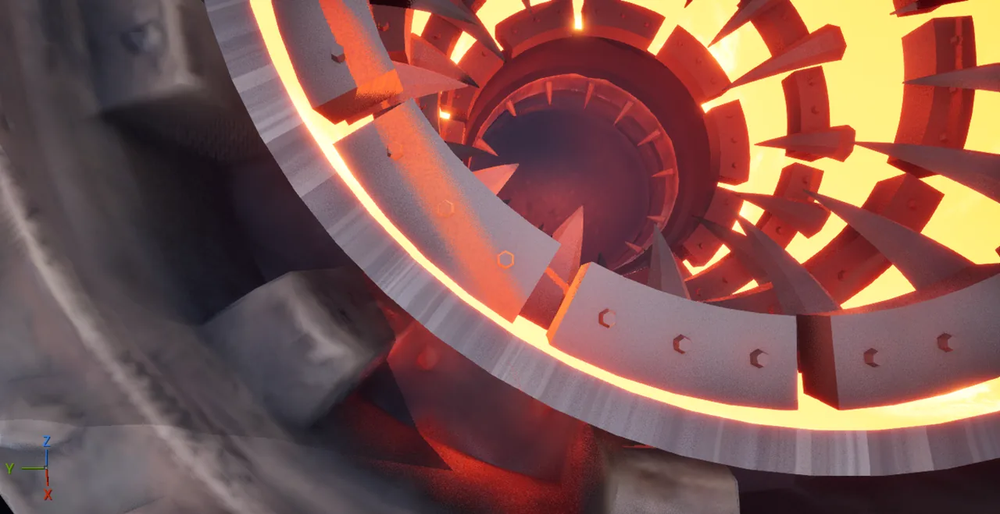
How It Arrives
The breach is the whole show, so it gets the most work. The ground swells first. Then it bursts, the head corkscrews out, and the Auger tips over and lands on its belly. From there it swims, with the body following the head round in one long curve while the tail is still coming out of the hole.
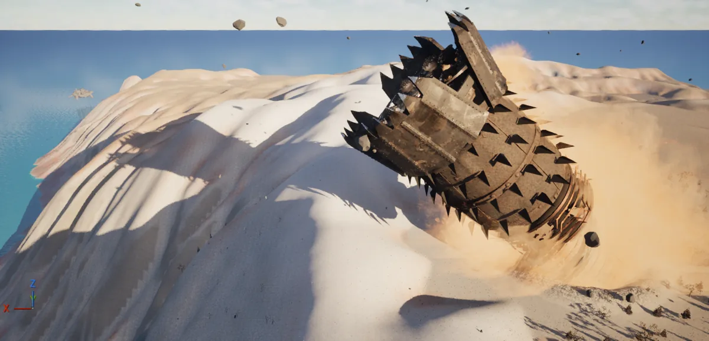


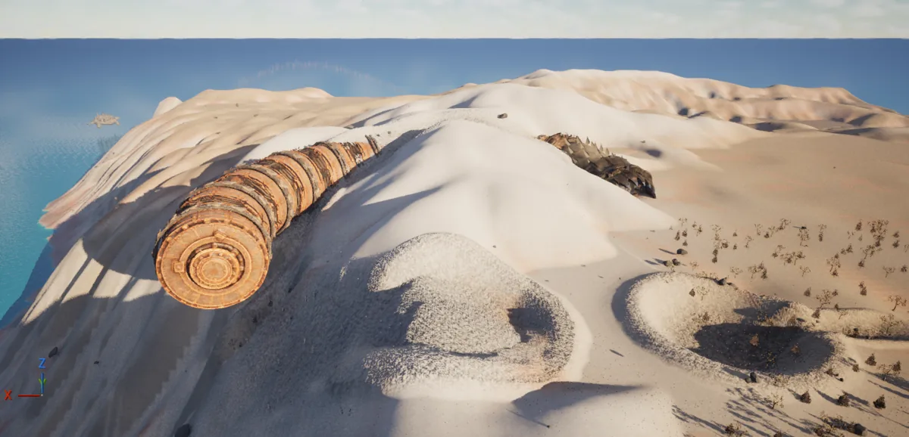
What you are looking at: captures from the Unreal editor on a test stretch of ground, first pass. The founder's review of the first breach was "ok first pass, a lot to improve," and that is where it stands. The shapes, the dust and the sound are all still being worked. This is the look only. The hunting behaviour has been written and has not yet been compiled or tested.
What It Does When It Finds You
- It hunts like a shark. It stays under until there is something to eat or attack, comes up for it, then goes back down.
- It picks one target. Put two Striders in front of it and it cannot chase both, so it chooses one and commits.
- People and small vehicles are in real danger. If you are on foot or in something light, you run.
- A Strider gets shoved, not sunk. The Auger does go after a Strider, but it can barely hurt one. Expect a hard nudge, dents, sparks, smoke and maybe a broken drivetrain. It never destroys a whole Strider.
- It leaves the monuments alone. It can circle one. It cannot destroy one, and it steers around large stone structures.
How You Survive It
You do not fight the Auger head on. You out run it or you out smart it.
- Make it surface. Underground it is faster than any Strider. On the surface it slows down, and a hull at speed can pull away.
- Throw a decoy. A decoy pulls the Auger to itself. It can never be used to drop the Auger onto someone else's hull.
- Turn it with fire. Heavy enough fire, meaning a main gun crew or several crews together, can change its course.
- Watch the ground. You feel the tremors and hear it coming. In the shallows you see the water swell. The warning is always there if you are paying attention.
Whether an Auger can ever be killed is an open design question. We have not decided, so we are not going to pretend.
What It Leaves Behind
An Auger cuts a trench through whatever it crossed. For five to ten minutes that trench is a warning: it came through here, and it may come back. After that it is a payday. Felled trees, broken stone and cracked ground stay behind for crews to collect once the danger has moved on. So an Auger arriving is a threat for half an hour and a reason to come back afterwards.
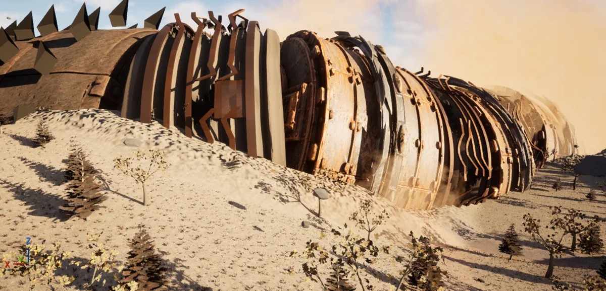
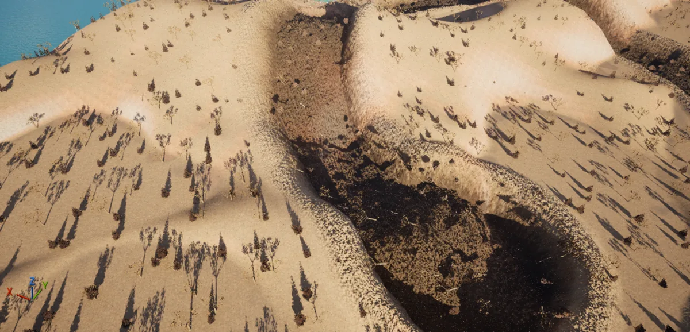
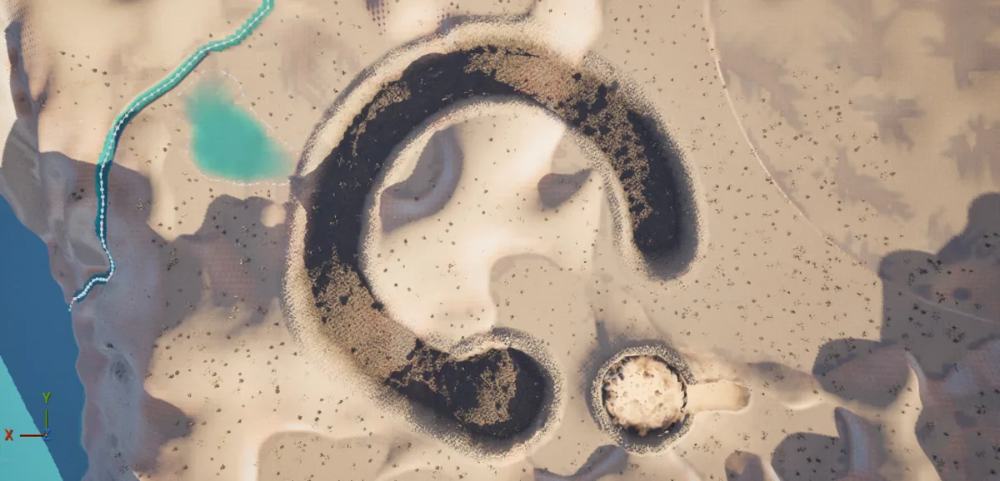
The trail and the harvest are design direction. Today the trench is a visual test on one machine. The version every player sees and collects from is still to be built.
The Colossus
If the Auger is the thing under the ground, the Colossus is the thing you can see from two regions away. It stands about 300 metres tall, roughly twice the height of the tallest Strider, and it carries a city in its chest.
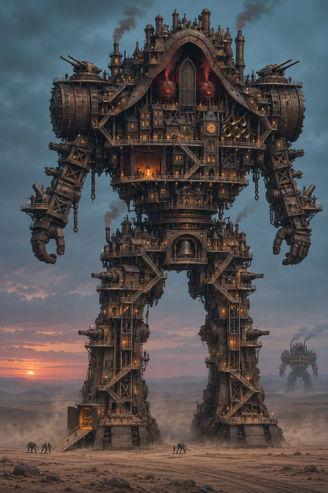
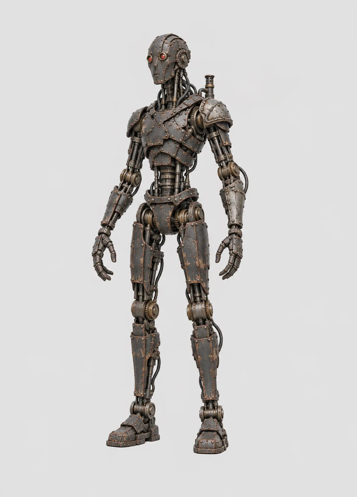
- It is not hunting you. The Colossus defends itself. Attack it and it answers everything that is shooting at it.
- It is crewed. Garrison bots stand on its balconies, man its guns and guard its feet. They carry an electric rifle called the Leyden Longarm, and they are tough.
- It wakes slowly. Before a Colossus rises it stirs: shoulders above the ground, lights on, the city inside coming alive, the bots already at the guns.
- It can be brought down. A Colossus falls in the end. It can do heavy damage on the way, but it can never destroy a whole Strider.
- It takes a crowd. A Colossus event is planned to run for days, not minutes, and no single Strider ends it alone.
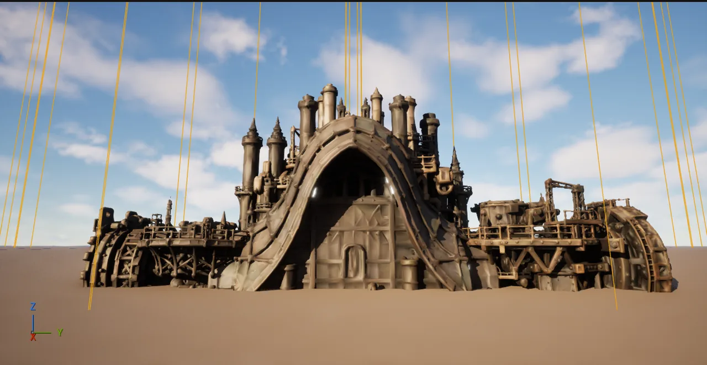
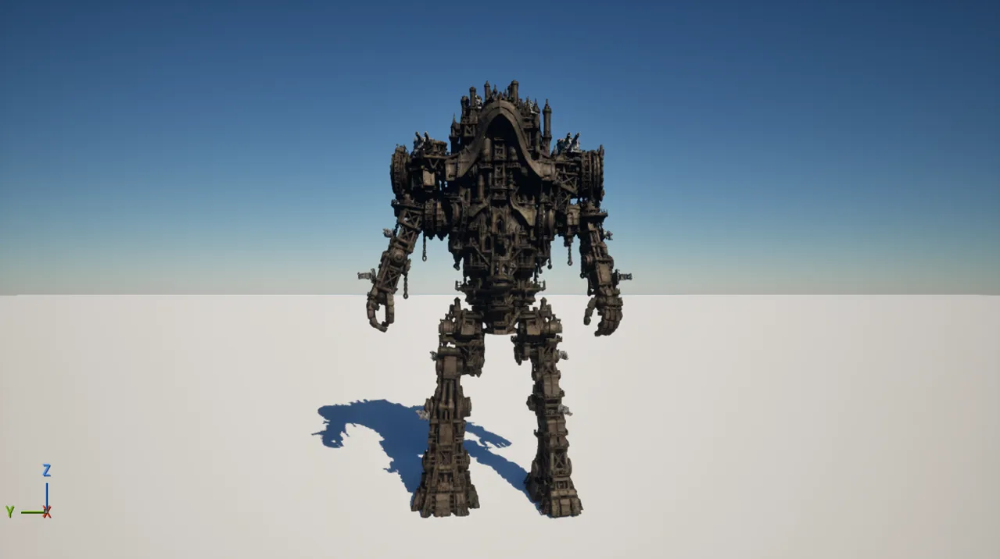
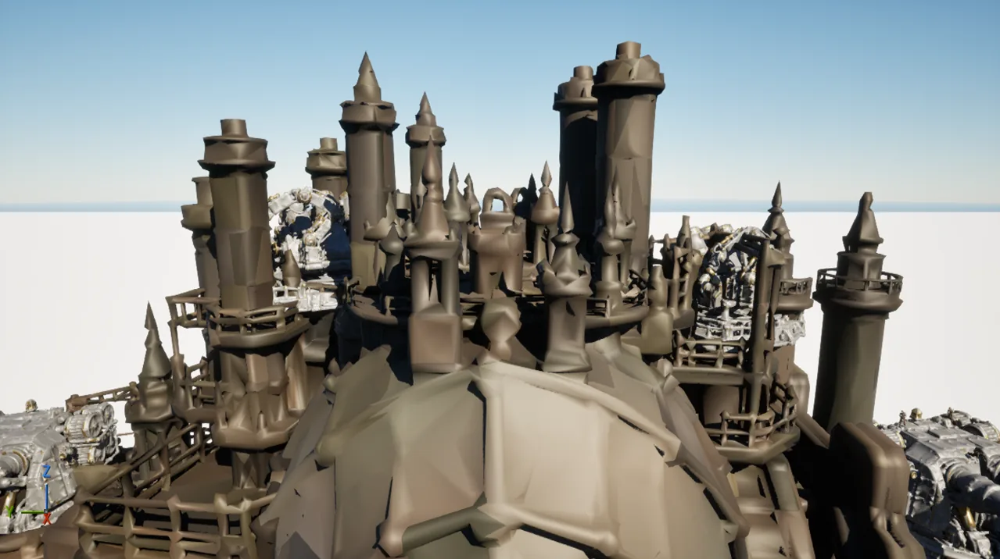
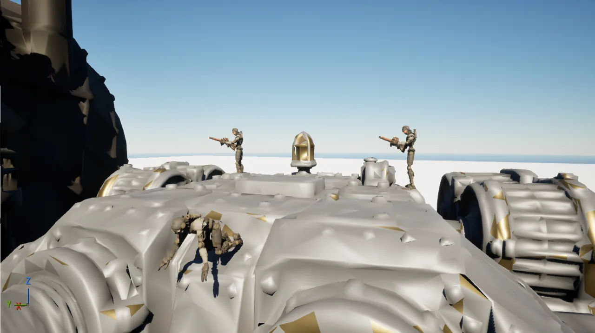
These are captures from a bare test scene with plain materials. A more detailed production build of the Colossus is planned.
Enemies on Foot and on the Road
The big machines are not the whole list. The world needs enemies you meet at eye level too, and that work is in design now.
- Mostly mechanical, with some living things. The disc is a machine world and most of what fights you will be machine.
- No two alike. Enemies on foot are being built on ten body types with mixed faces and mixed clothing so a crowd of them never looks like copies.
- Runs for a crowd. We are designing forty enemy runs across foot, vehicle, air and water for groups of thirty to forty players, so newer players can ride along with veterans. Loot is never shared out of one pile. Everyone gathers their own.
- You can take their machines. Capturing enemy machines and stripping them for parts is planned as a big part of the game.
Honest status: there is nothing to show for this group yet, so we are not showing anything. Names and art will go up here when they are real.
One rule already holds: nothing about any enemy can be bought. No paid escapes, no paid repairs, no paid loot. Zero pay to win covers the monsters too.